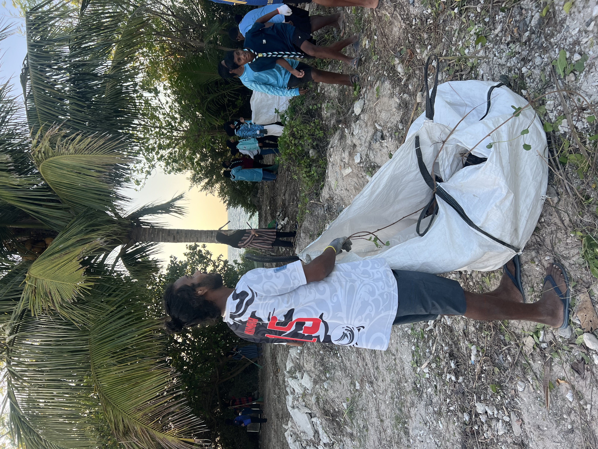
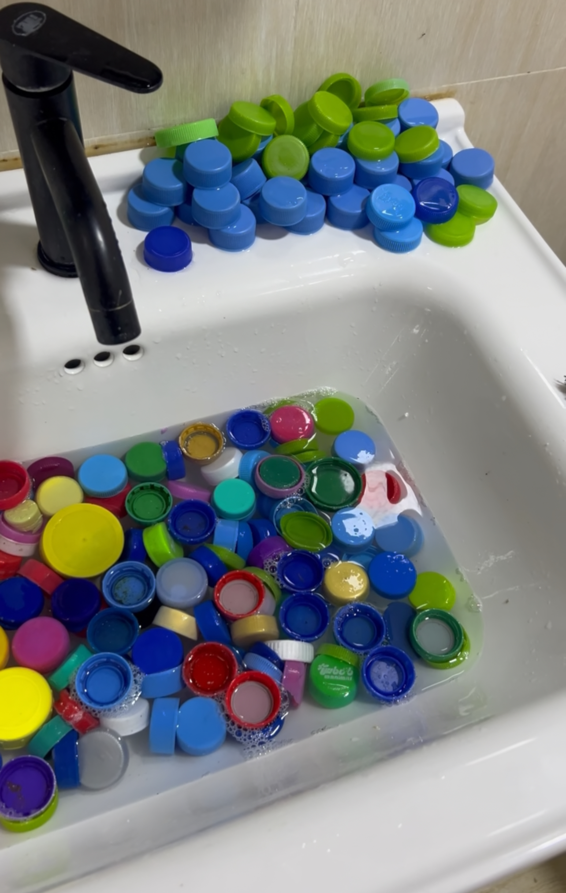
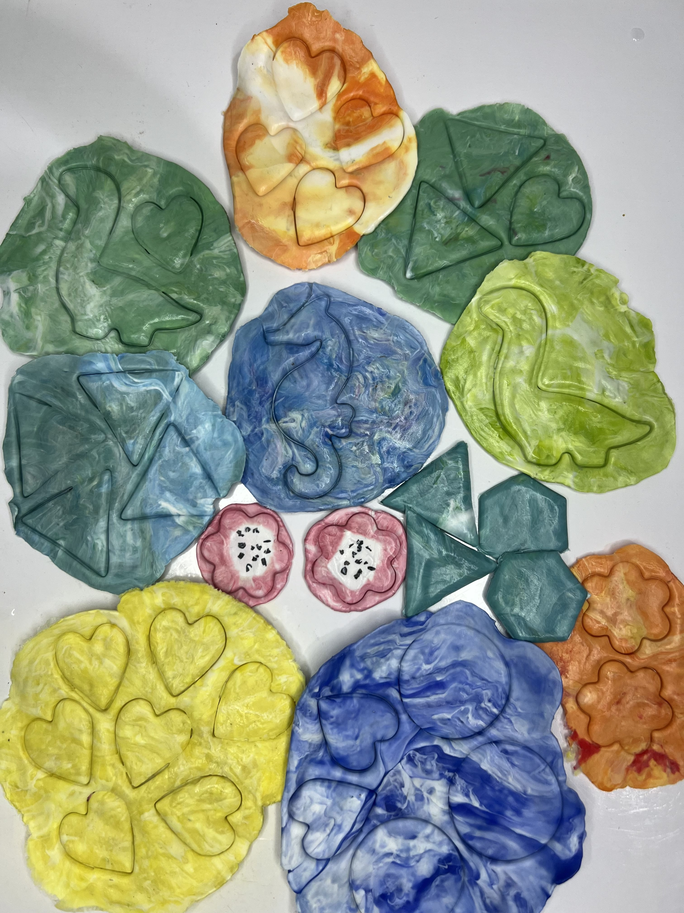
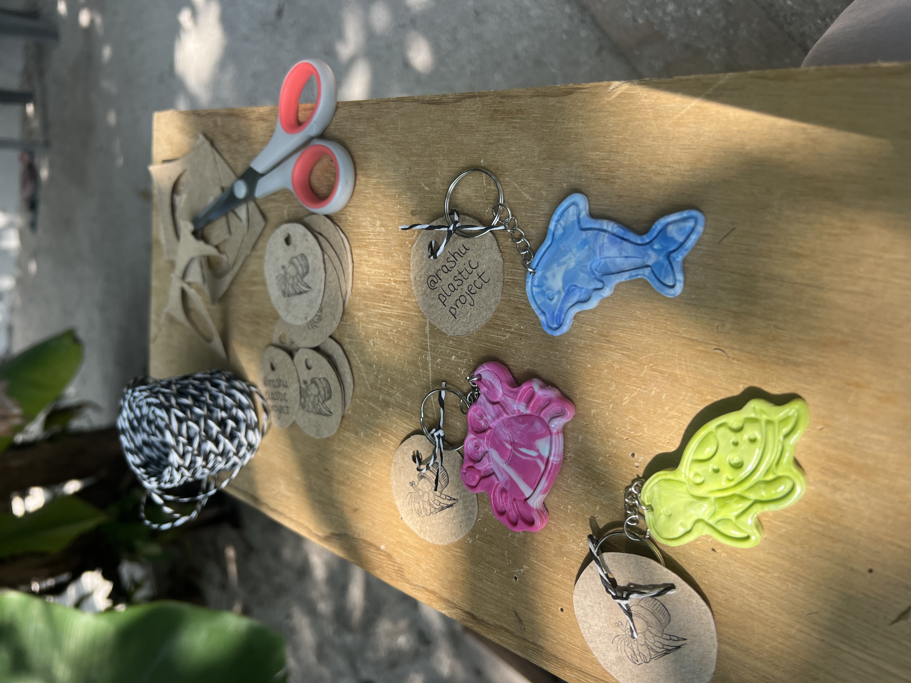

Our Solution: Plastic Reimagined
Every product we create is a piece of pollution removed from our beaches, landfills, and oceans. Discover the journey of how we give plastic a new life.
Our Recycling Journey
Watch as discarded plastic bottle caps and other plastic materials are reborn into beautiful, meaningful creations through our 5-step transformation process.

Beach and Community Collection
Plastic waste is collected from local beaches and nearby uninhabited islands, household donations are collected and we try to rescue as much as we can from the landfill. As our project increases in size, we will be able to expand our plastic collection.

Thorough Cleaning and Sorting
Each piece undergoes meticulous hand-cleaning to remove salt, sand, and ocean residue. We remove all labels and any sticky residue and sanitise. The plastic is sorted by colour and plastic type.

Precision Shredding
Cleaned plastic is carefully shredded manually, into uniform flakes. This crucial step increases surface area and ensures even melting during the crafting process, creating the foundation for beautiful new products. It also allows for easier storage in the workshop.

Artisan Crafting
The plastic used is weighed and recorded. Then, using innovative low-tech methods including repurposed panini presses and custom made cookie cutters, we trasnform plastic flakes into beautiful marine-inspired shapes with love and precision.

Ocean's Gift Reborn
What was once ocean waste is now a treasured piece of jewelry or keychain, carrying a powerful story of transformation. Each piece represents hope, conservation, and the beauty that emerges from conscious action.
Be Part of This Journey
Every product purchase supports ocean cleanup and artisan livelihoods